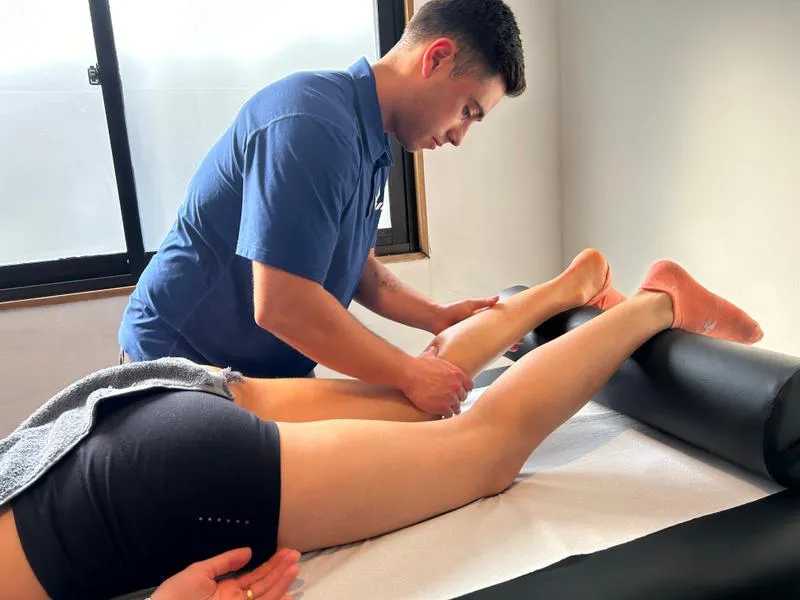

Recupera más rápido. Entrena mejor.
El cuerpo mejora cuando descansa bien. En Kalud el recovery es parte del plan — masajes deportivos y técnicas de recuperación muscular para que llegues a cada sesión sin acumulación, sin tensión y con todo.
Recovery deportivo: más que un masaje
El masaje deportivo en Kalud es realizado por profesionales kinesiológicos con formación específica en terapia manual deportiva. No es un masaje relajante: es una intervención clínica sobre el tejido muscular y conectivo sometido a estrés de entrenamiento.
Trabajamos con técnicas de tejido profundo, liberación miofascial y técnicas de compresión isquémica para eliminar tensión acumulada, mejorar la circulación y acelerar la eliminación de subproductos metabólicos del ejercicio.
- Masaje de tejido profundo
- Liberación miofascial
- Técnicas de compresión y fricción
- Movilización articular
- Stretching asistido post-sesión
¿Qué tipo de sesión necesitas?
Masaje deportivo
Técnicas de tejido profundo sobre grupos musculares específicos del deporte que practicas. Ideal como parte de la rutina de entrenamiento.
- Foco en grupos musculares principales
- Tejido profundo + liberación miofascial
- 45–60 minutos
Recovery post-competencia
Protocolo específico para después de una carrera, torneo o evento. Elimina contracturas, reduce inflamación y acelera la recuperación.
- Técnicas anti-inflamatorias
- Drenaje linfático manual
- Stretching asistido
Masaje terapéutico
Para zonas con dolor crónico, contracturas persistentes o zonas en recuperación de lesión. Trabajo más específico y clínico.
- Foco en zona de dolor o lesión
- Trabajo con puntos gatillo
- Coordinado con kinesiología
Pack de sesiones
¿Entrenas regularmente? Consulta por packs mensuales con precio preferencial. El recovery constante marca la diferencia en tu progreso.
Por qué el recovery es parte del entrenamiento
Reduce DOMS
El dolor muscular de aparición tardía (agujetas) disminuye significativamente con masaje en las 24–48 horas post-ejercicio.
Mejora la circulación
Aumenta el flujo sanguíneo local, acelerando la eliminación de ácido láctico y otros metabolitos del ejercicio intenso.
Previene lesiones
La identificación y tratamiento temprano de contracturas y zonas de tensión evita que se conviertan en lesiones más serias.
Mejora la movilidad
La liberación de fascia y tejido muscular tenso mejora el rango de movimiento articular, optimizando la técnica deportiva.
Acelera la recuperación
Menor tiempo entre sesiones de entrenamiento de alta intensidad gracias a una recuperación muscular más completa.
Bienestar general
Reducción de estrés físico y mental acumulado por el entrenamiento. El sistema nervioso también se recupera.
El recovery es para todos los que entrenan
Runners y ciclistas
Piernas con alto volumen de carga. Trabajo específico en cuádriceps, isquiotibiales, gemelos y banda iliotibial.
Tenistas y golfistas
Tren superior y rotadores. Hombros, manguito rotador, antebrazo y musculatura cervical frecuentemente sobrecargada.
Crossfitters y levantadores
Todo el cuerpo bajo alta demanda. Espalda, glúteos, cadena posterior y hombros son las zonas más solicitadas.
Pre y post competencia
Preparación muscular antes de un evento y recuperación profunda después. Protocolos específicos para cada momento.
Todo lo que necesitas saber
El masaje deportivo trabaja con técnicas específicas para tejidos musculares sometidos a estrés de entrenamiento: tejido profundo, liberación miofascial, compresión y movilización articular. Su objetivo es funcional (mejorar rendimiento y recuperación), no de relajación general.
Depende de tu volumen de entrenamiento. Para deportistas que entrenan 4–5 veces por semana, recomendamos 1 sesión semanal o quincenal. En períodos pre-competencia o de alta carga, puede ser conveniente aumentar la frecuencia.
Las técnicas de tejido profundo pueden generar molestia localizada, especialmente en zonas con tensión acumulada. Sin embargo, siempre adaptamos la presión a tu tolerancia. La incomodidad es pasajera y se asocia con liberación de tensión muscular, no con daño.
Las sesiones estándar duran 45–60 minutos. Según tu zona de tratamiento y objetivos, puede ajustarse la duración. En el agendamiento online puedes seleccionar la modalidad y duración que necesitas.
Para conocer el valor actualizado de la sesión y los packs disponibles, consulta directamente agendando en reserva.kalud.cl/agendar o escribiéndonos por WhatsApp.